多伦多新公寓实拍
走进三套已建成的公寓，在实际房间里看橱柜、地板、家具和照明。点照片可放大，图下注明了单位和出处。
门板、台面与光泽
先看整排柜门，再靠近水槽，观察木纹、柜缝与防溅墙的交接。

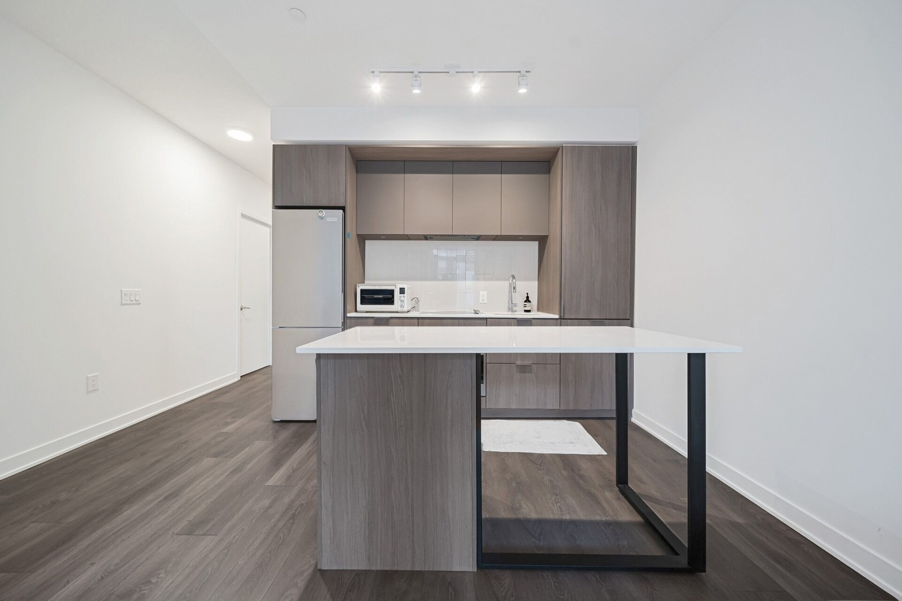
灰木纹与暖灰吊柜
直面厨房，看高柜木纹如何与浅色台面相接。
Artsy Boutique · 35 Tubman Ave · 3232023 · Virtual Home Photography 原图

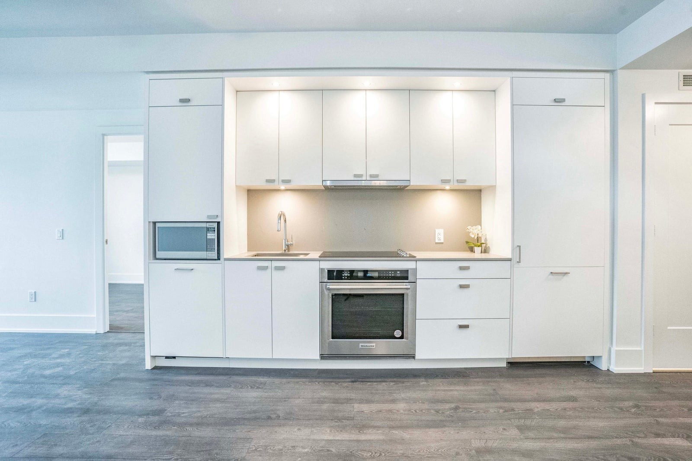
浅色通排柜门
从正面看电器两侧的分缝，以及灯光落在防溅墙上的位置。
The Well · 480 Front St W · 16172023（房源记载） · Jeff Johnston 原图


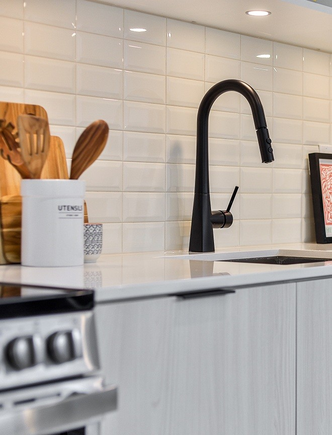
水槽旁的柜体细部
黑色龙头和浅色墙砖衬出下柜的竖向纹理。
Canary Commons · 35 Rolling Mills Rd · S4502022 · Fox Marin 原图

木纹在房间里的走向
在窗边、床沿和空房里看同类木色。板缝方向和采光会改变人对房间进深的感受。

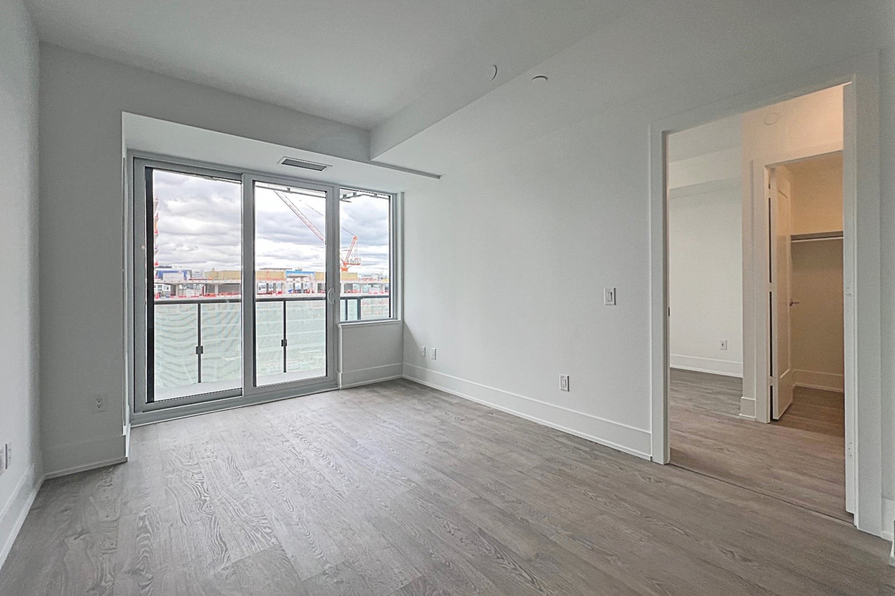
落地窗前的铺向
沿地板看向阳台门，板缝把房间进深交代得很清楚。
The Well · 480 Front St W · 16172023（房源记载） · Jeff Johnston 原图


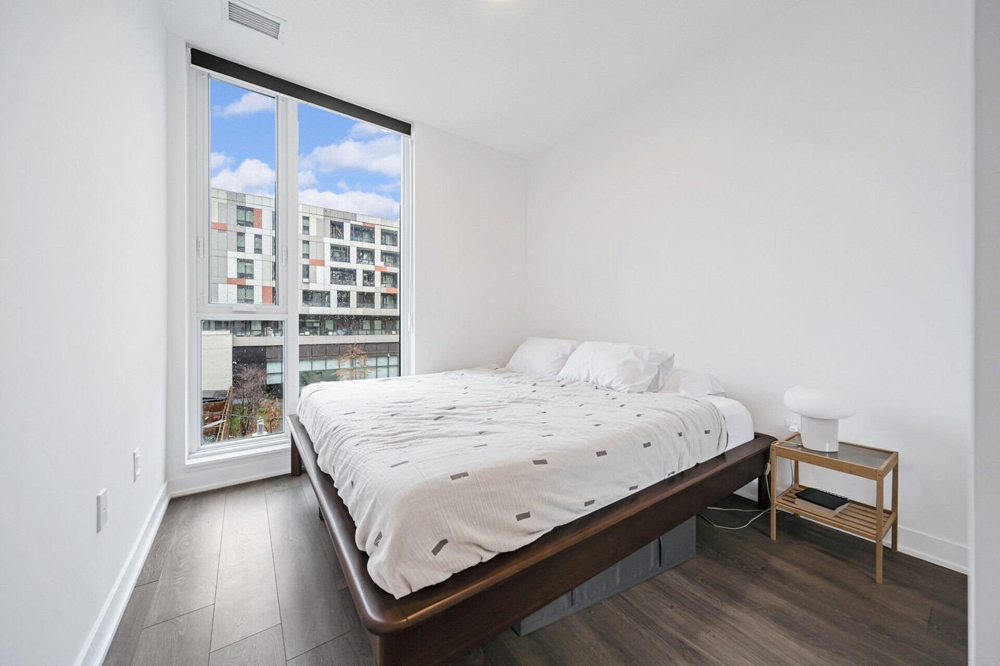
床边的深木色地板
床沿、白色踢脚线与地板同框，可以对照深浅。
Artsy Boutique · 35 Tubman Ave · 3232023 · Virtual Home Photography 原图

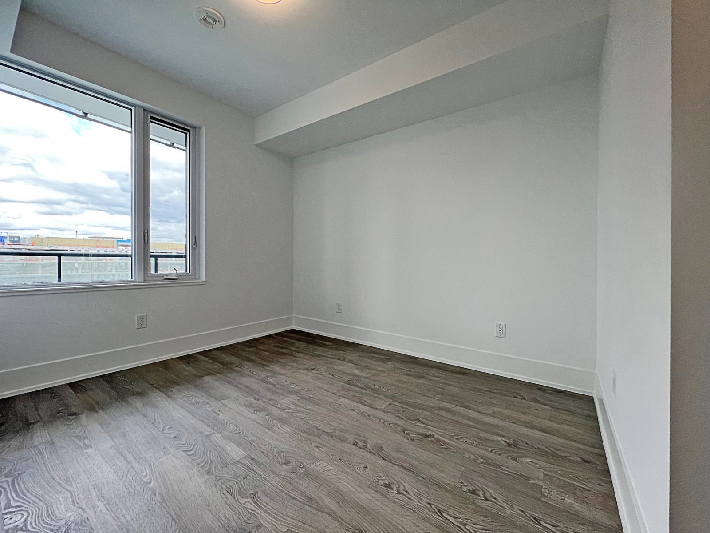
卧室窗下的木纹
侧窗来光让近窗与背光处的木纹呈现不同明暗。
The Well · 480 Front St W · 16172023（房源记载） · Jeff Johnston 原图

窗边沙发与行走空间
先从入口看沙发占了多少空间，再看扶手和侧面。将来做平面规划时，通往卧室和阳台的路线也要一起核对。

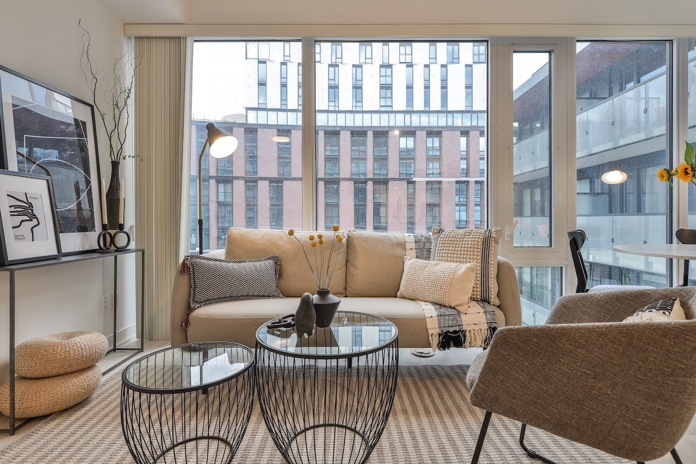
从客厅入口看摆位
沙发、茶几、单椅和窗户都在画面内，适合讨论家具间距。
Canary Commons · 35 Rolling Mills Rd · S4502022 · Fox Marin 原图


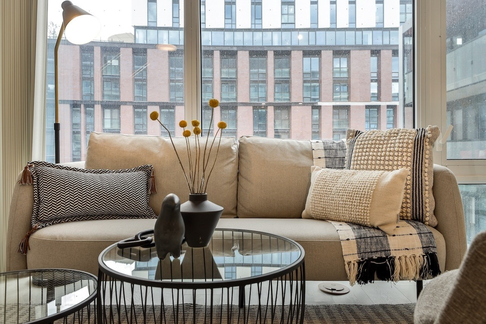
同一张沙发的正面
窗光下能分辨坐垫的厚度、布面和抱枕的色差。
Canary Commons · 35 Rolling Mills Rd · S4502022 · Fox Marin 原图


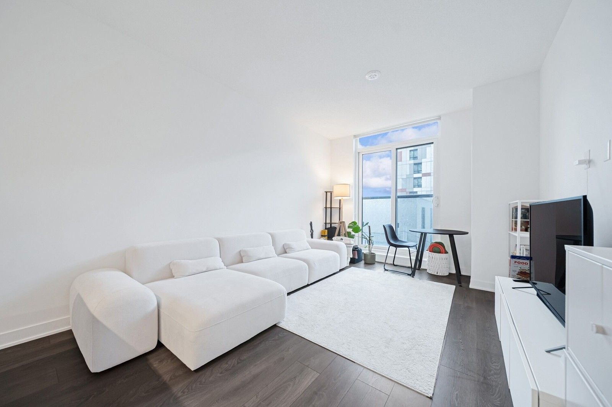
转角沙发与阳台门
沿侧墙摆放的浅色沙发，展示转角占地和窗前余量。
Artsy Boutique · 35 Tubman Ave · 3232023 · Virtual Home Photography 原图
光具体落在哪里
分别看备餐、床头阅读和沙发角。三张照片记录各自的现场用灯，适合与客户讨论哪里需要补光。

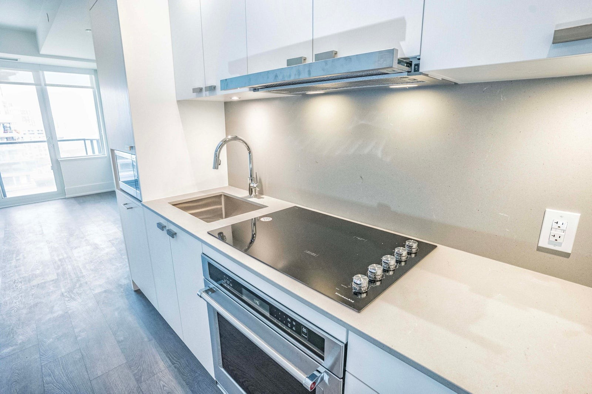
厨房的柜下工作灯
看水槽与灶面后方的受光范围，以及金属表面的反光。
The Well · 480 Front St W · 16172023（房源记载） · Jeff Johnston 原图


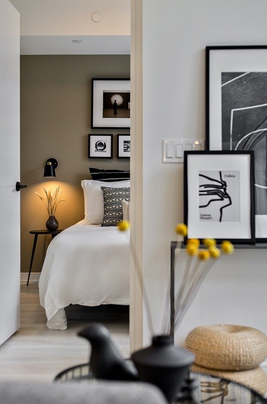
床头壁灯
从门外看去，壁灯照亮床头的一小块墙面。
Canary Commons · 35 Rolling Mills Rd · S4502022 · Fox Marin 原图


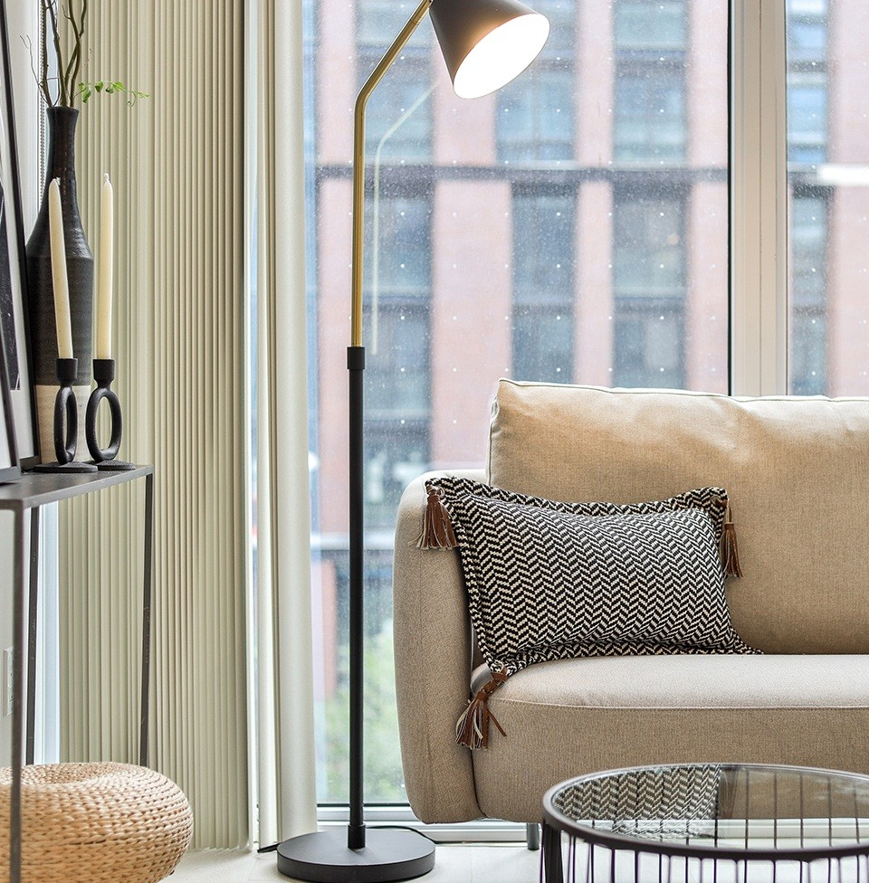
沙发旁的落地灯
灯头朝向座位，窗外的自然光同时照亮扶手与靠垫。
Canary Commons · 35 Rolling Mills Rd · S4502022 · Fox Marin 原图

卫浴、洗衣与阳台
补看玻璃、金属与家电在安装完成后的样子。

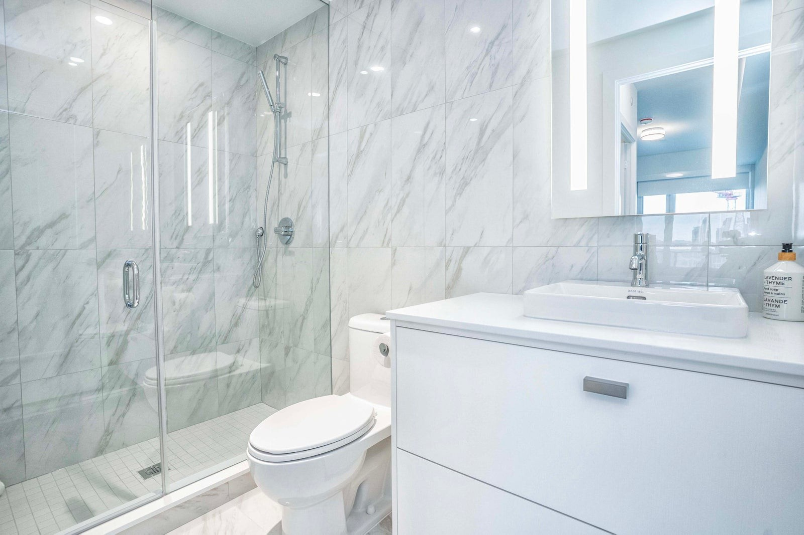
淋浴隔断与五金
看玻璃门边、五金和墙砖的交接。
The Well · 480 Front St W · 16172023（房源记载） · Jeff Johnston 原图


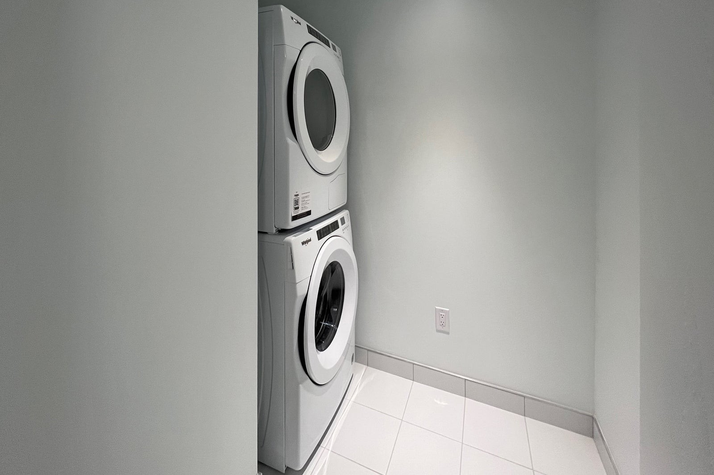
叠放式洗衣设备
看上下叠放的机身与洗衣柜的相对位置。
The Well · 480 Front St W · 16172023（房源记载） · Jeff Johnston 原图


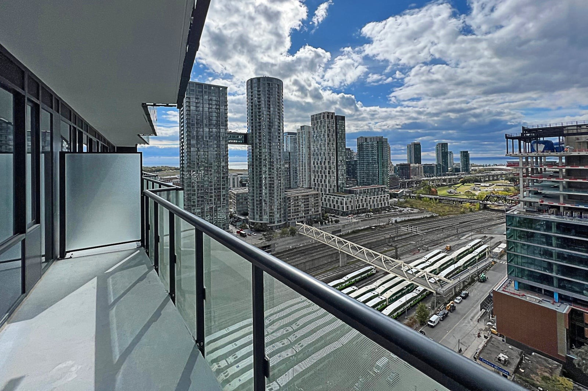
阳台玻璃与窗框
从阳台一侧看玻璃栏杆及外窗框。
The Well · 480 Front St W · 16172023（房源记载） · Jeff Johnston 原图